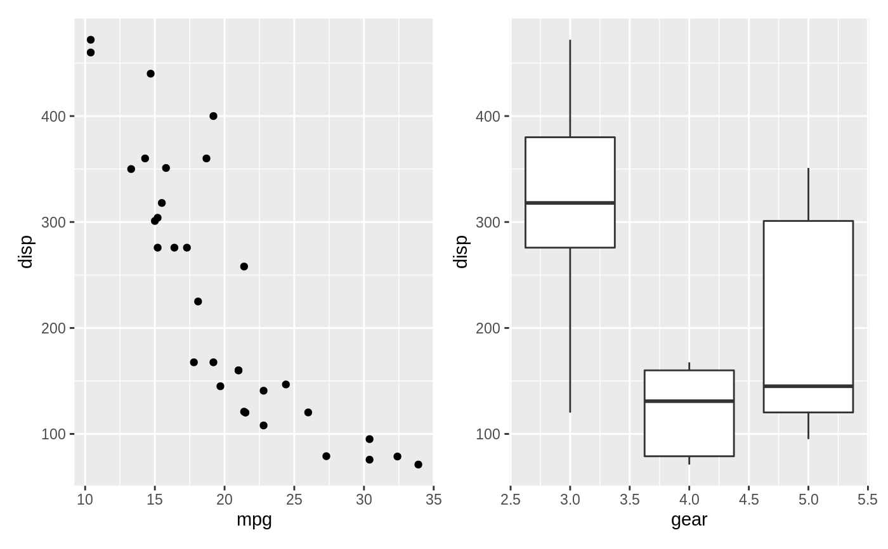
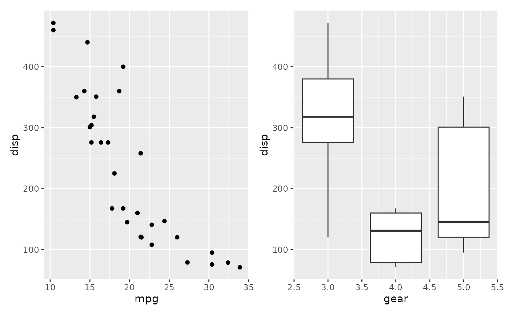

The 'ggplot2' package provides a strong API for sequentially building up a plot, but does not concern itself with composition of multiple plots. 'patchwork' is a package that expands the API to allow for arbitrarily complex composition of plots by providing mathmatical operators for combining multiple plots. Other packages that addresses this need (but with a different approach) are 'gridExtra' and 'cowplot'.
Overview
The use and premise of patchwork is simple: Just add ggplot2 plots
together to compose multiplot layouts. Because of this simplicity there is
not much more to say. Still, a few functions allow you to modify the
behaviour:
plot_layout()allows you to define the grid that plots are put intoplot_spacer()inserts a completely empty plot thus pushing the subsequent plots one patch.
That's it...
See also
Useful links:
Examples
library(ggplot2) # You can add plots saved to variables p1 <- ggplot(mtcars) + geom_point(aes(mpg, disp)) p2 <- ggplot(mtcars) + geom_boxplot(aes(gear, disp, group = gear)) p1 + p2# Or build it up in one step ggplot(mtcars) + geom_point(aes(mpg, disp)) + ggplot(mtcars) + geom_boxplot(aes(gear, disp, group = gear))